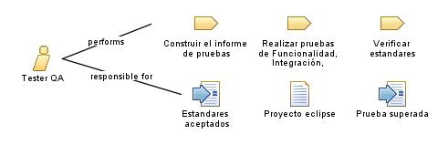

|
| El tester QA desempeña un papel crítico en la garantía de calidad de los productos o servicios de una empresa, al contribuir a la detección temprana de errores y a la mejora de la experiencia del usuario. |
|
Relationships
 |
| Primary Performs |
|
| Modifies |
|
Main Description
Un tester QA (Quality Assurance) es un profesional especializado en asegurar y mejorar la calidad de los productos o
servicios de una empresa, especialmente en el ámbito del desarrollo de software, estas son algunas de
las responsabilidades y tareas comunes de un tester QA:
-
Planificación y diseño de pruebas: El tester QA participa en la planificación y diseño de casos de
prueba, definiendo los escenarios de prueba, los criterios de aceptación y las estrategias de prueba adecuadas para
cada proyecto.
-
Ejecución de pruebas: Realiza pruebas funcionales, de rendimiento, de usabilidad, de
compatibilidad, entre otras, siguiendo los casos de prueba definidos. Registra y documenta los resultados de las
pruebas y reporta los defectos encontrados al equipo de desarrollo.
-
Automatización de pruebas: Desarrolla y ejecuta pruebas automatizadas utilizando herramientas
específicas de automatización de pruebas. Esto ayuda a acelerar el proceso de pruebas y a mejorar la eficiencia en
proyectos de desarrollo de software a largo plazo.
-
Análisis de defectos: Examina y analiza los defectos encontrados durante las pruebas para
identificar la causa raíz y colaborar con el equipo de desarrollo en su resolución. Ayuda a asegurar que los
problemas se solucionen correctamente y verifica que las correcciones sean efectivas.
-
Mejora continua: Propone y contribuye a la mejora continua de los procesos de desarrollo y
pruebas. Identifica oportunidades de optimización, implementa mejores prácticas y colabora con el equipo en la
adopción de estándares de calidad.
-
Colaboración con el equipo de desarrollo: Trabaja de manera estrecha con los desarrolladores, los
analistas de negocio y otros miembros del equipo para comprender los requisitos, realizar pruebas efectivas y
garantizar la calidad del producto final.
|
Staffing
| Skills |
Algunas de las habilidades del tester QA son:
-
Conocimiento de pruebas de software: Un tester QA debe tener un sólido conocimiento de las
diferentes técnicas de prueba y metodologías utilizadas en el ciclo de vida del desarrollo de software. Esto
incluye conocimientos sobre pruebas funcionales, pruebas de rendimiento, pruebas de usabilidad, pruebas de
seguridad, entre otras.
-
Comprensión de los requisitos de negocio: Es esencial que el tester QA comprenda los requisitos
del negocio y las expectativas del cliente. Esto ayuda a enfocar las pruebas en los aspectos clave del software y a
validar que cumple con los objetivos y necesidades del usuario final.
-
Habilidades de comunicación: Un tester QA debe tener habilidades sólidas de comunicación verbal y
escrita. Esto implica la capacidad de comunicarse de manera clara y efectiva con los miembros del equipo de
desarrollo, analistas de negocio y otros stakeholders. También implica ser capaz de documentar adecuadamente los
resultados de las pruebas, informar sobre los problemas encontrados y colaborar en la resolución de los mismos.
-
Capacidad analítica y de resolución de problemas: Un tester QA debe ser capaz de analizar y
comprender los sistemas de software en detalle, así como identificar y diagnosticar problemas. Debe ser capaz de
investigar y encontrar la causa raíz de los defectos encontrados, colaborando con el equipo de desarrollo para su
resolución efectiva.
|
|